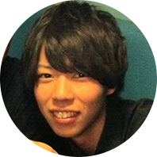

創業メンバー
実際にフリーランスとして活躍しているエンジニアが立ち上げました

フリーランス講師
染谷 佳佑
ISARA (THAILAND) CO.,LTD.の代表です。学生起業の後にリクルートへ就職、その後独立し、海外移住しました。今はフリーランスとしてリモートワークで日本円を稼ぎ、外国通貨に変えて使い、海外を旅してます。営業、ブログPVアップ(最高月間150万PV)、ビジネス構築が専門です。
フリーランス講師
成田 雄輝
バンコクのシェアハウスのオーナーをやりながら一年の大半をタイで過ごしています。 大学時代から今に至るまでネットだけで生計を立てているので、自由歴だけは講師陣の中で最長です！ 母親がタイ人という事もありタイには精通してますので、こちらでの生活のサポートはお任せください！

フリーランスエンジニア
坂内 学
アドバイザーとして参画しました。新卒で海外就職して１１ヶ月後に退職。今は日本にいたり海外にいたりでゆるくフリーランスをしています。
お仕事はWebマーケティングとプログラミングが専門領域です。